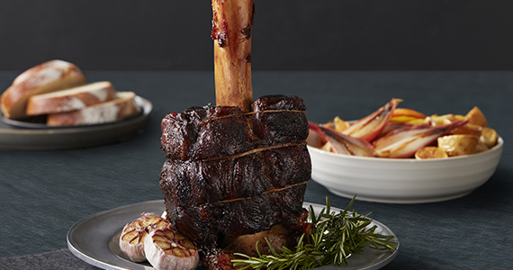
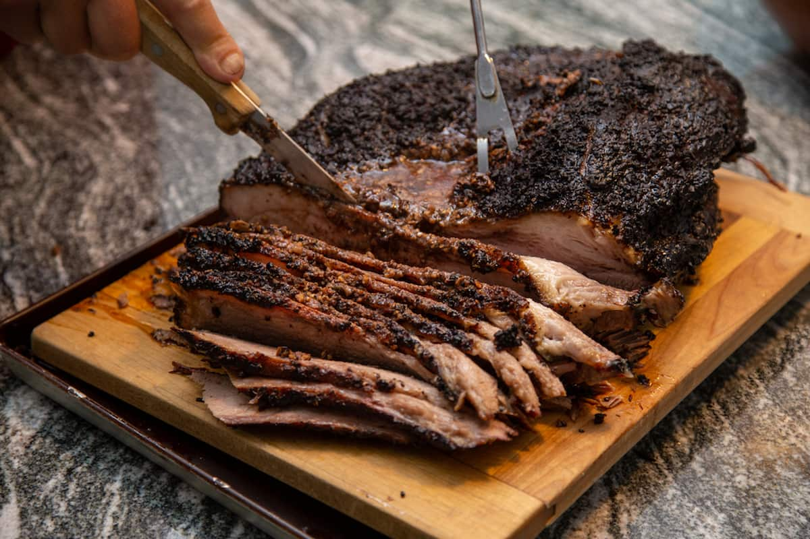
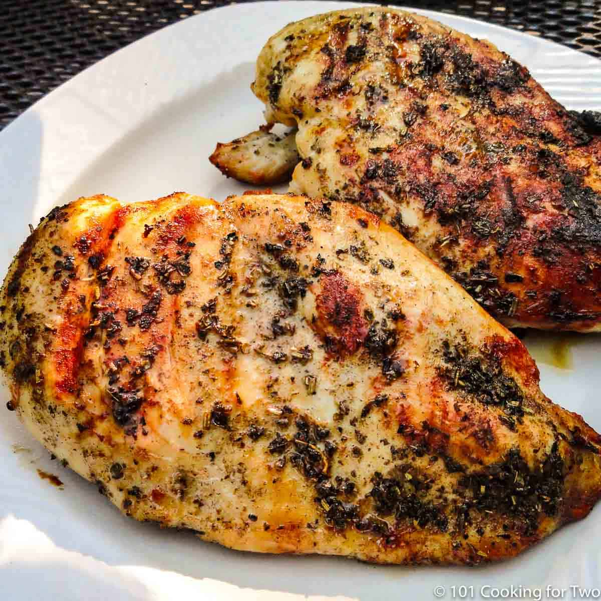
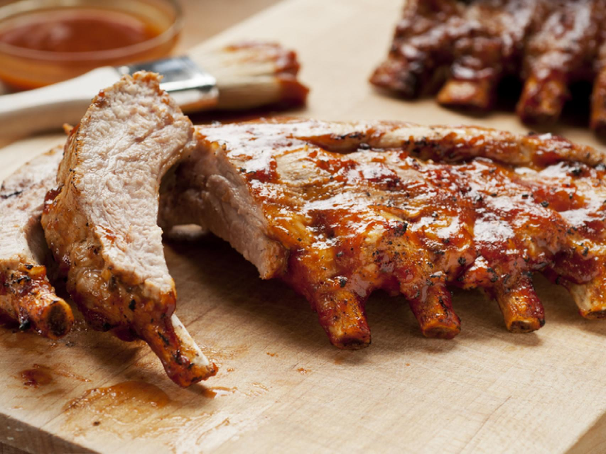
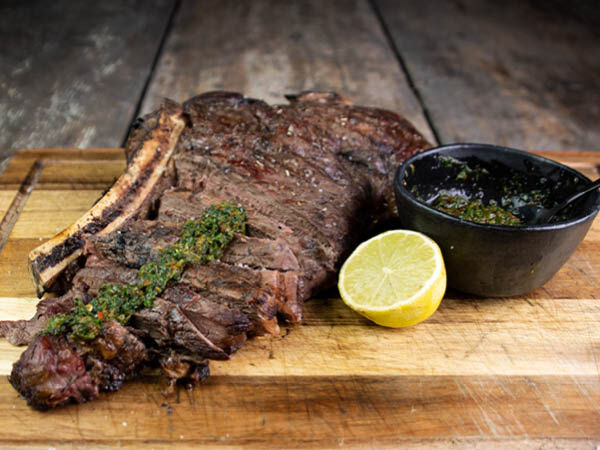
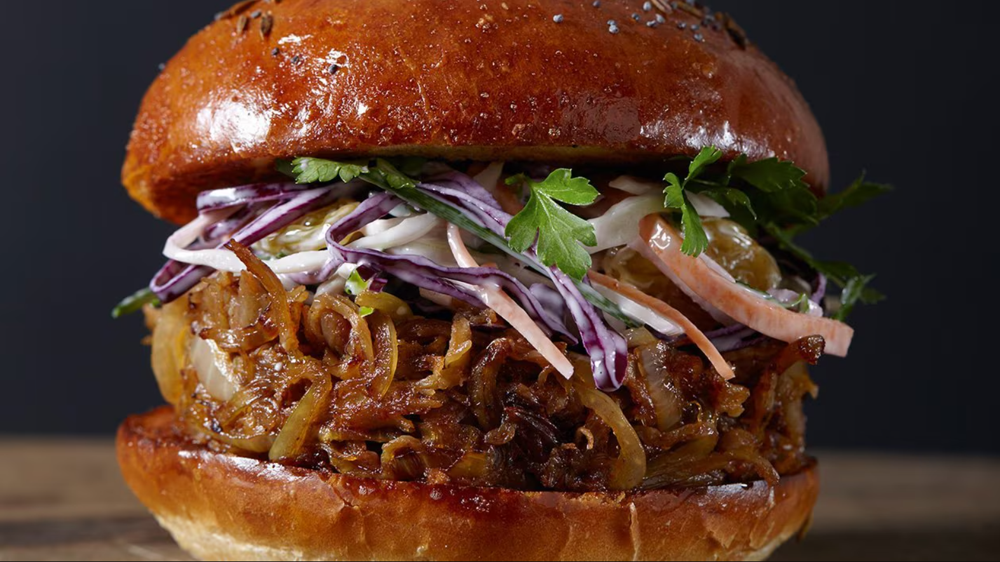
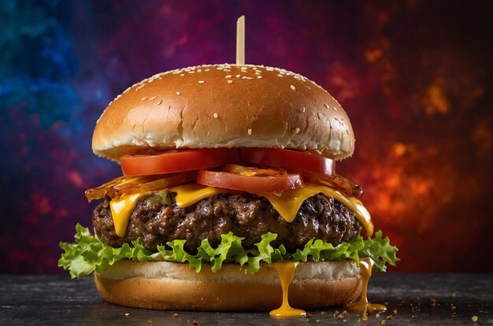

Platos
Thor's Hammer
Delicioso codillo de cerdo ahumado con madera de manzano y cocinado lentamente (+650 gr) de cerdo ecológico Brasvar.
Ingredientes: codillo de cerdo, mezcla de especias "Porktastic BBQ rub", mostaza de De Ster, salsa Dijonnaise.
Precio: 31,5 €
Brisket
Pecho de res Black Angus al estilo BBQ de Texas, cocido con sal marina, varias pimientas y maderas de nogal y manzano.
Ingredientes: pecho de res Black Angus, sal marina, pimientas, madera de nogal y manzano, salsa BBQ.
Precio: 33 €
BBQ Chicken
Media pechuga de pollo belga Belle Flamand, marinada al estilo italiano y servida con salsa de ajo.
Ingredientes: pollo Belle Flamand, orégano, tomillo, aceite de oliva, limón, salsa de ajo.
Precio: 25,5 €
Seis Costillas de Simmental
Costilla de res Simmental, conocida por su sabor intenso y jugosidad, servida con béarnaise fresca.
Ingredientes: costilla de res Simmental, salsa béarnaise.
Precio: 35 €
Côte à l'os Jersey 21d Madurado
Corte de res Jersey madurado durante 21 días, cocinado en el hueso para un sabor adicional a BBQ.
Ingredientes: res Jersey, salsa de maduración, hueso.
Precio: 49 €
Pulled Pork Burger
Hamburguesa de cerdo desmenuzado Brasvar, ahumada y cocinada lentamente, servida con ensalada de col y salsa BBQ.
Ingredientes: cerdo Brasvar, ensalada de col, salsa BBQ.
Precio: 21,5 €
Full Loaded Burger
Hamburguesa de res belga blanca y azul (BWB), asada a la parrilla y acompañada de pulled pork, salsa BBQ y ensalada de col.
Ingredientes: carne de res BWB, pulled pork, salsa BBQ, ensalada de col.
Precio: 26 €